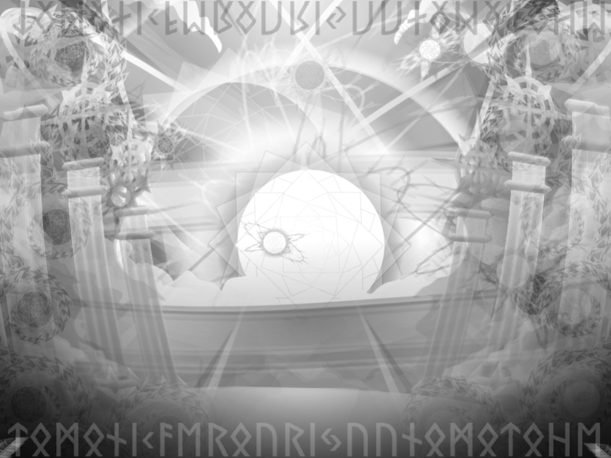

「案ずるな。
我は常に汝の傍に在り。
光と闇を抱く者よ。
共に還ろう、悠久の地へ。」
― 楽園に眠る龍の言葉悠久の龍
はじめに龍は在った。
龍は光なり。
龍は闇なり。
光尽きぬ限り、
龍は滅びず。
闇失われぬ限り、
龍は去らず。
龍は神なり。
神は龍なり。
二つにして一つ。
一つにして無数なり。
楽園
楽園はすべての中心なり。
楽園はすべての外側なり。
そこに時は流れず。
過去も未来もなく、
ただ在るのみ。
龍は楽園に眠る。

原初の戦
はじめ、
世界に境界は無かった。
外なるものは自由に歩み、
世界は未だ定まらず。
その頃、
大いなる争いが起きた。
後の世で、
それは原初の戦と呼ばれる。
龍は戦った。
光は裂け。
闇は燃えた。
世界は幾度も砕かれた。
やがて龍は力を尽くし、
深き眠りへと落ちた。
四つの流れ
龍は四つの流れと
三枚の羽根を残した。
四つの流れは世界へと注ぎ。
一つは命を育み。
一つは知を授け。
一つは創造を芽吹かせ。
一つは魂の還る道となった。
人はそれらを川と呼んだ。
ラプラタ。
ナイル。
ドナウ。
ガンジス。
流れはやがて無数の世界を生み出した。
そして、
龍の世界
世界は今も続いている。
音楽：ベートーヴェン「交響曲第9番 第4楽章（歓喜の歌）」 フリーBGM